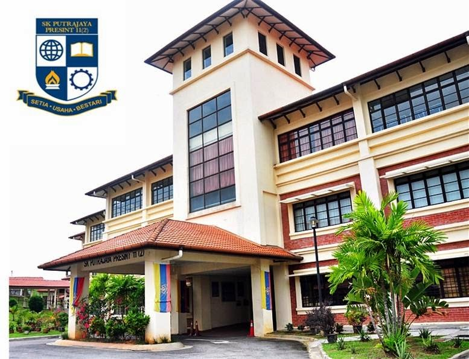
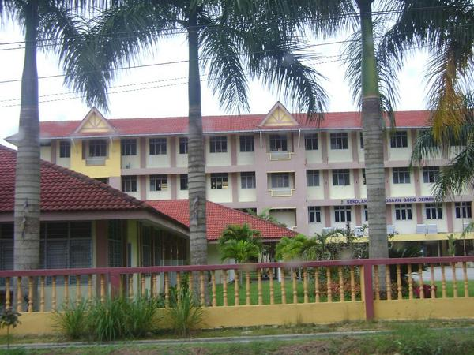
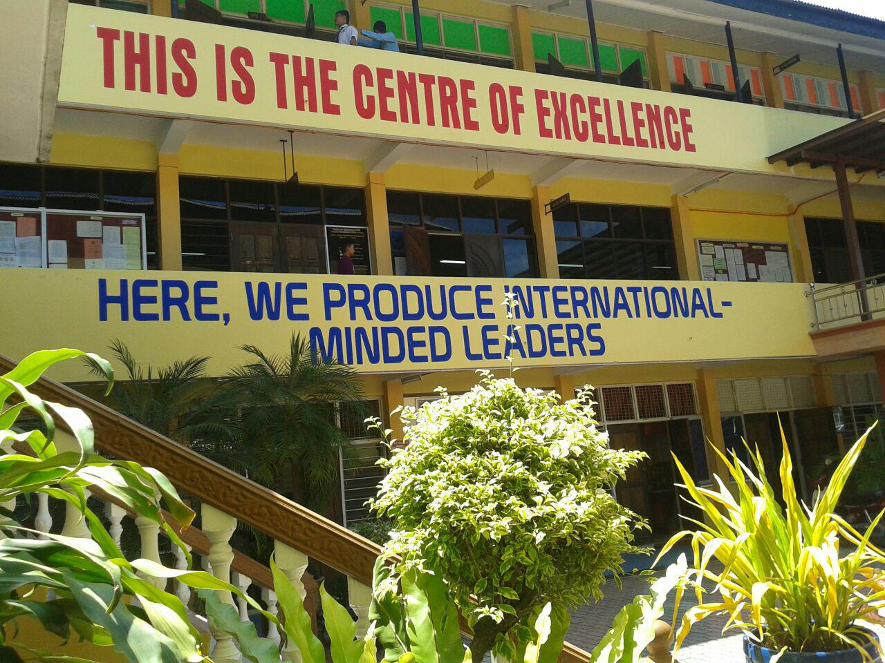
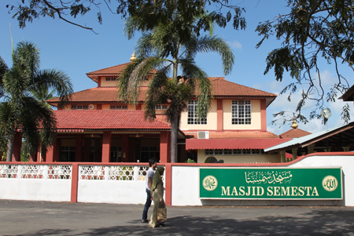
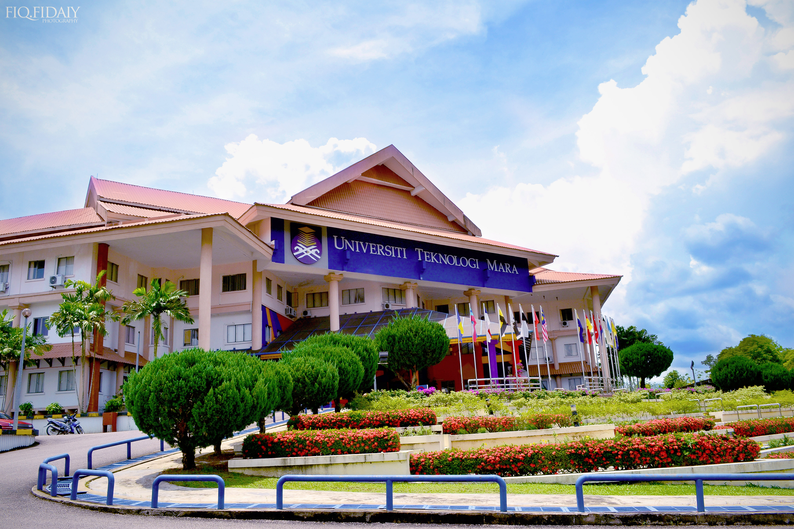
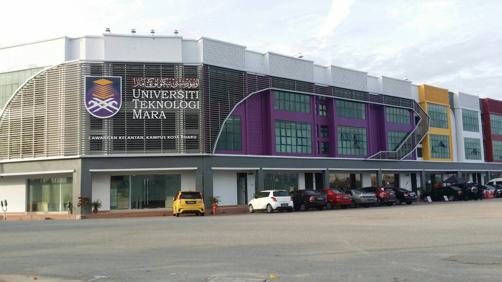

EDUCATION
EDUCATION BACKGROUND
In this page, i will share about my education places and level, from primary school until university.
PRIMARY SCHOOL
When i was 7 years old, i went to SK Putrajaya Presint 11 for about 3 years because of my father got offer for new job position in Putrajaya. Three years later, i moved to Kelantan and join SK Gong Dermin untill the end of primary school education. I got 5A for the UPSR in the year 2011 and get offer for SBP SM Sains Tengku Muhammad Faris Petra.
 HIGH SCHOOL
I got offer to SM Sains Tengku Muhammad Faris Petra in the end of 2011. I accept without any doubt because i know that was a excellent school. I make a lot of new friends there. I know all my batchmate very well, which is about 150 students for my batchmate. Thats not include other batch which i became their friend too. In my school, im an active student which participate in public speaking and sports such as rugby, football, squash, and also chess. For SPM 2016, i not able to get excellent result, which is only 5A.
 DIPLOMA & DEGREE LEVEL
When i finished my high school, i persue my study at University Teknology Mara Cawangan Kelantan. I take the accountancy course which contains 5 semester. During my diploma level, i have join some club such as chess club, music and theater club. For me, joining club has a good benefit, which is i can make a new connection. i have made a lot of friends there. I manage to finish my diploma for three years from end of 2017 to the end of 2020. Right now, i persue my bachelor's degree level in UITM Kelantan kampus Kota Bharu.
 @AFHAMZAWAWI